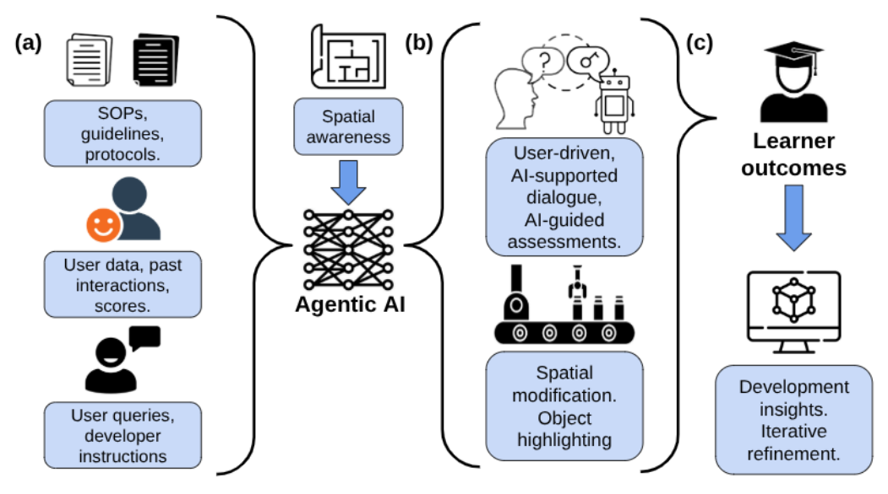

1University of California Irvine, Dept. of Computer Science · 2Troy High School · 3Mercer County Community College · 4University of California Irvine, Dept. of Electrical Engineering and Computer Science · 5Princeton Materials Institute, Princeton University · 6California Institute for Telecommunications and Information Technologies (CalIT2)
Journal of Advanced Technological Education (J ATE), 5(1), 2026
We present a bi-coastal, multi-institution digital twin and AI educational platform (DT/AI) for advanced microelectronics fabrication and device packaging training, developed by a collaborative spanning UC Irvine, Mercer County Community College, and Princeton University.
This Phase-2 effort extends our earlier AI-powered VR simulation framework with enhanced lithography and advanced device packaging modules, high-fidelity equipment emulations, facility-specific SOP adherence, a parallel fabricated chip-under-test with I/O verification, and tightly-coupled agentic AI engines that personalize each learner's training session.

UC Irvine Photolithography workflow inside the digital twin cleanroom.
Princeton University and Mercer CC Lamination workflow with high-fidelity equipment emulation.
Caltech Wet etching workflow with the Kavli Nanoscience Institute.
Demo 4. Agentic AI tutor providing learner-centric guidance throughout the training session.